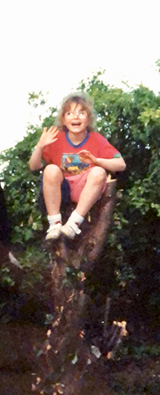

I’m a designer and illustrator living in London interested in experimental comics and systems art. I’m also interested in using rules and limitation to structure stories, emergent design, and absurdity which feels emotionally resonant. My MA dissertation was about the role of gaps and spaces in visual narrative and how they enable the reader or watcher to participate.
rapturebird on Instagram, r.e.cottrell ✺ gmail.com